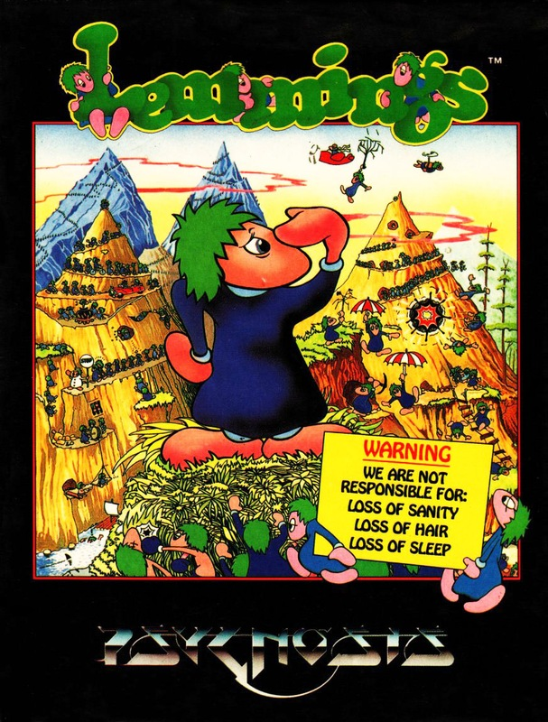
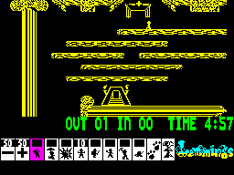
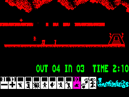
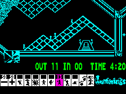
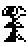
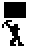

Lemmings


{kind=link}

| Publisher: | Psygnosis |
| Price: | £12.99 |
| Year: | 1991 |
| Source: | CRASH, Issue 94 |

Reach for your parachutes peeps cos we’re off for a cliff-hanging trip with the luverly Lemmings — courtesy of Psygnosis. Cute they may be intelligent they ain’t. You sure wouldn’t find one of these critters on Mastermind. And so messy! Splattering their bodies all over the place indeed, no consideration. Haven’t they ever heard of taking an overdose? NICK ROBERTS dons his green wig and jumps off CRASH Towers (about time too — Ed).....


la — No, follow it not leap off it!
The Lemmings are little critters with big green mops on their heads and groovy blue jackets. They’d be a peaceful, fun loving kind if it wasn’t for one problem — they haven’t got a brain cell between them! (Do these people work at CRASH? — Ed). To make matters worse they’ve found themselves in a heap of trouble and need to be rescued.
Each level of the game has traps, high cliffs, deep holes and all sorts of other hazards for the chaps to avoid as well as an entrance and exit. When the Lemmings start coming out of the entrance, they keep going until they hit a wall (as you do!) and turn around, come to the end of a rock and fall to their doom, or you select one of the icons to give a Lemming a special job to do.

Oh, sorry, look at him fall!
The trick is to get the required amount of Lemmings to the exit within the time limit using only the icons you have at your disposal. Icons get less and less the further you progress into the 60 levels of the game, split into four categories — Fun, Tricky, Taxing and Mayhem. You are going to need some quick thinking and lightning reactions to rescue all the little Lemmings.
IT MAKES ME SICK!
The idea behind this game is so sickeningly simple it had programmers all over the world kicking themselves for not thinking of it first. The sprites used are tiny so need little attention to detail, the programmer’s skill is used by thinking up devilishly difficult levels for the unsuspecting games player. The graphics are almost exactly the same as the Amiga or Atari ST’s. The only difference seems to be that all the colour has been taken out of them, the whole game’s in monochrome. This doesn’t spoil things too much though, except that when the Lemmings crowd together all you can see is a block of colour! The more characters on screen the slower the game gets too, but that’s nothing to moan about — it’s a miracle the game is running on a Spectrum in the first place!
LOADSA LEVELS

for a Lemming! Never mind, not far
to the top now!
You’re not going to complete Lemmings in a hurry. There are four skill levels: Fun, Tricky, Taxing and Mayhem and each of these has 15 landscapes to complete. That makes (whirr, whirr) 60 levels of Lemming mayhem in all! 128K owners don’t have to reload levels if they fail to complete them, 48K owners do.
Lemmings is an excellent conversion of a highly popular 16-bit game. It may have a couple of problems in the speed and colour departments but I can live with these. This is one game that I am going to be addicted to for a long time.
NICK — 91%
Living with the Lemmings
To get these creatures to the exit safely you are going to need lots of these icons to give some of them jobs to do. Here is the low down on what each one does.
 |
NUKE : This buttons is great fun (evil laugh!) If you have gone and made a right mess of a level then you can use this to blow up all the Lemmings on the screen up at once. |
| PAWS MODE: Ha, ha! Guess what this one does. (Can’t imagine Nicko, Pillock! — Ed) | |
| DIGGER: This will make one dig horizontally down. If another Lemming tries to follow he will undoubtedly go kersplat at the bottom. | |
 |
MINER: The miner Lemming will dig a diagonal tunnel downwards until he finds air again. |
| BASHER: A basher Lemming will stomp through any rock in front of him. Once a rock has been tunnelled through he will go back to being a normal walker. | |
| BUILDER: Rivers of fire and water and long gaps in the rock can only be crossed by making one into a builder. He’ll make a bridge over the deadly area. | |
| BLOCKER: To stop the mob charging off the edge of a high platform turn the front runner into a blocker. Make him put his arm up and stop the critters behind. | |
| EXPLODE: This nasty option will severely cut down the life expectancy of a Lemming. A count down from five will appear above his head and at zero he’ll explode. | |
| FLOATER: Gives the Lemming an umbrella so that if he walks off the edge of a cliff he can float safely down to the ground without splattering at the bottom. | |
| CLIMBER: Turns one Lemming into a climber. He’ll climb a cliff face until he reaches the top. If this cliff drops straight down again he will plunge to his death! | |
| PLUS: Increases the number of Lemmings. But guard against an overflow. Or we’re talking deep doodoos. | |
| MINUS: Decreases the number of Lemmings being released at one time. Slow those critters down! | |
Six downers for a Lemming
- You spend your life thinking you can fly!
- By the time you realise you can’t, it’s too late!
- A do-gooder puts down a safety net!
- You can’t think of anything to be depressed about!
- You’re put in a padded cell!
- You’re dyslexic and keep trying to jump up a cliff!

Oh to be a Lemming! They don’t have to worry about mortgage rates and house prices. Oh no, all they care about is finding themselves a cliff to spectacularly chuck themselves off. Trying to stop the little swines following their natural instincts in this game is frustrating but fun. They are such morons — IQs of three below a rocking horse! Fortunately, if they annoy you too much you can just press the nuke button and blast the bleedin’ blighters to smithereens! (I wonder if you can buy a button like that for real life?) Graphically, Lemmings is superb, although the sprites and backgrounds are monochrome so the Lemmings sometimes get lost in the scenery. Also the cursor used to control the suicidal creatures is sometimes rather sluggish as you try desperately to avert disaster. Lemmings is an absolutely stonkin’ game so if brain teasers are your cup of tea, go out and buy it — now!
LUCY — 90%
RATING
Psygnosis have done the impossible by squeezing Lemmings into the Spectrum. It may be monochrome but it’s an excellent conversion.
| Presentation: | 87% |
| Graphics: | 89% |
| Sound: | 86% |
| Playability: | 87% |
| Addictivity: | 91% |
| Overall: | 91% |